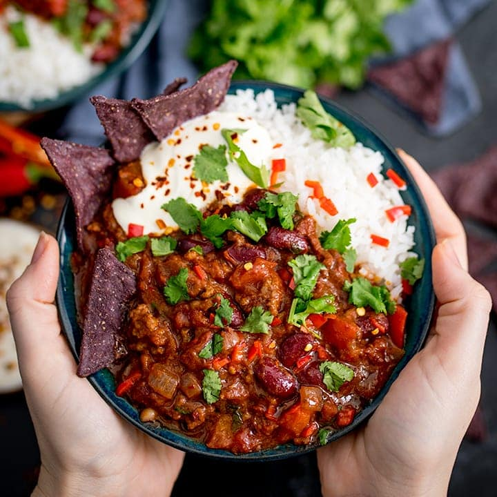

Chilli con Carne

Description
Here's a spicy classic you can still eat while on a diet. Serve with a
salad and/or a very small portion of rice. Don't forget you've already got
carbs in the beans.
Ingredients
- 500g lean minced beef (10% or less fat)
- 2 medium onions, chopped
- 3 garlic cloves, peeled and finely chopped
- 1-2 tsp hot chilli powder
- 2 tsp ground cumin
- 2 tsp ground coriander
- 2 tbsp plain flour
- 150ml red wine or extra stock
- 300ml beef stock, made with 1 beef stock cube
- 400g can of chopped tomatoes
- 400g can of red kidney beans, drained and rinsed
- 3 tbsp tomato purée
- 1 tsp caster sugar
- 1 tsp dried oregano
- 1 bay leaf
- flaked sea salt
- freshly ground black pepper
Steps
-
Place a large non-stick saucepan over a medium heat and add the beef and
onions. Cook together for 5 minutes, stirring the beef and squishing it
against the sides of the pan to break up the lumps. Add the garlic, 1-2
teaspoons of chilli powder, depending on how hot you like your chilli,
and the cumin and coriander. Fry together for 1-2 minutes more. Sprinkle
over the flour and stir well.
-
Slowly add the wine and then the stock, stirring constantly. Tip the
tomatoes and kidney beans into the pan and stir in the tomato purée,
caster sugar, oregano and bay leaf. Season with a pinch of salt and
plenty of freshly ground black pepper.
-
Bring to a simmer on the hob, then cover loosely with a lid. Reduce the
heat and leave to simmer gently for 45 minutes, stirring occasionally
until the mince is tender and the sauce is thick. Adjust the seasoning
to taste and serve.